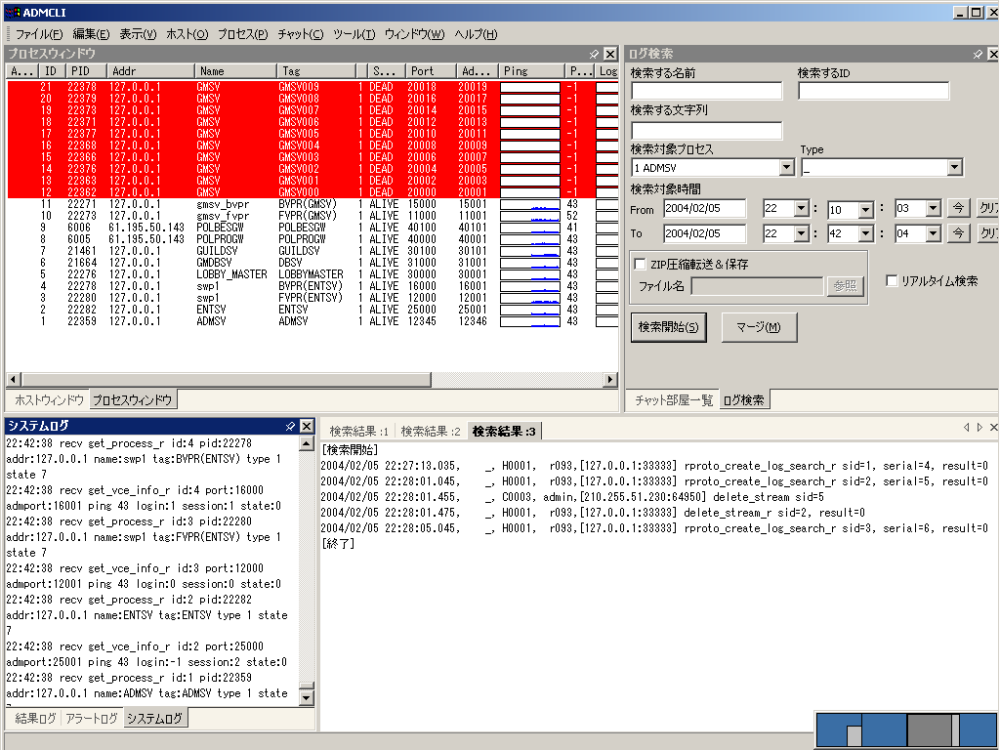
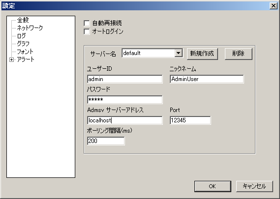

Admin client(admcli.exe)は、admsv(監視サーバー)に接続して使う、Windows用GUIプログラムである。
パッケージ内では、admin/wincli/ にadmcli一式のzipファイルが含まれている。

実行出来ない場合は、http://www.innovasys.netにあるDockStudioXPをインストールする事によってうまくいった例がある。
これで起動が可能になる。実行ファイルは admcli.exe である。
はじめて admcli.exe を実行した時、いくつか設定が必要である。
admsvの起動と監視するサーバーマシン上でのrsvの起動をしておかなければならない。 また、監視するサーバーマシン(admsv,rsvが実行されている)のIPアドレス(またはマシン名)を入手しておく。 ユーザ名、 パスワードは、admsv.userに記載されているものを使用する。 (デフォルトではユーザ名admin, パスワードはadminである)
これらの設定が終了したら、OKボタンを押し、設定ダイアログボックスを終了する。 その後、[ファイル]-[Login] にて admsv サーバーに接続する事が出来る。
[参考:デフォルトの設定例]
ユーザーID:admin ニックネーム:(設定なし) パスワード:admin admsv サーバーアドレス:(admsvを実行しているlinuxのIPアドレス[例:192.168.1.20]) その他は変更しない

ログインに成功すれば、ホストウインドウにマシン名とIPアドレス、プロセスウインドウにadmsv(他にもいくつかの監視プロセス)が表示される。
パスワードが間違っているなどでログインが失敗した場合は、システムログウィンドウに以下のログが表示されるので確認する。
hh:mm:ss Connect! hh:mm:ss send login hh:mm:ss recv login_r result: -1
admcli では以下の問題が起ることが確認されている。今後のバージョンアップで 修正されていく予定である。